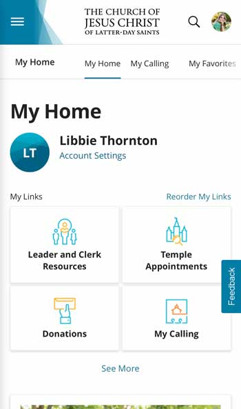

PARC: Contrast
Nike
The Nike website demontrates the principle of contrast very well. The most noticable aspect is in the color scheme. Nike's whole website is a white background with black text. This is the highest level of contrast you can have between two colors, so everything shows up very nicely and is readable. Another source of contrast on this site is the use of curved buttons in contrast with the blocky headings and text.
Visual Hierarchy
Church of Jesus Christ of Latter-Day Saints
The website for the Church of Jesus Christ of Latter-Day Saints showcases the principle of visual hierarchy very well. The most important information is the largest on the page and it gradually gets smaller from there according to how important it is. The page title of "My Home" lets the user know where they are on the page. The next largest thing is the name of the account user logged in. The next largest text are the links to the various pages on the site. Then just smaller than that is options to see more and customize your home screen. This layout makes it very easy for the user to find the information they are looking for.
PARC: Repetition
Roolee
The Roolee site does an excellent job of showing the design principle of repetition throughout their site. There are several elements found in just this small screenshotted portion of the site. The two pictures both contain similar shades of green. Going further down the website, several other photos also have a similar green background, so that color is repeated through the site. The font style on those photos is also repeated throughout.